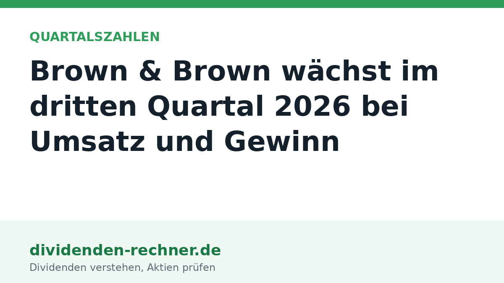

Magazin
Analysen, Erklärstücke und Einordnungen zu Dividendenaktien, Kennzahlen, Quellensteuer und Depot, geschrieben für Privatanleger in Deutschland.

Quartalszahlen · 27.10.2026, 20:20 Uhr
UPS setzt 22,9 Milliarden um, Sondereffekte drücken das Ergebnis
UPS legt die Ergebnisse für das dritte Quartal 2026 vor: Der Umsatz steigt auf 22,9 Mrd. USD, während Sondereffekte das operative Ergebnis belasten.
Quartalszahlen · 27.10.2026, 13:23 Uhr
Boeing setzt 24,2 Milliarden um und bleibt operativ im Minus
Boeing verzeichnet im dritten Quartal 2026 einen Umsatz von 24,2 Milliarden US-Dollar, schreibt jedoch operativ weiterhin rote Zahlen.

Quartalszahlen · 27.10.2026, 12:58 Uhr
Coca-Cola verdient mehr: Umsatz und Konzernergebnis steigen
The Coca-Cola Company legt die Zahlen für das dritte Quartal 2026 vor. Der Nettoumsatz und das Konzernergebnis steigen im Vergleich zum Vorjahr.
Sonstige Meldung · 27.10.2026, 11:50 Uhr
Mercedes-Benz senkt Ausblick für 2026 wegen China und Kosten
Die Mercedes-Benz Group passt wegen hoher Materialkosten und Gegenwind in China ihren Ausblick für das Gesamtjahr 2026 an.

Quartalszahlen · 27.10.2026, 10:13 Uhr
HSBC verdient 9,6 Milliarden vor Steuern und kauft Aktien zurück
HSBC steigert den Vorsteuergewinn im dritten Quartal 2026 auf 9,6 Mrd. USD. Neben einer Dividende von 0,10 USD folgt ein neuer Aktienrückkauf.
Quartalszahlen · 27.10.2026, 09:40 Uhr
Novartis erhöht die Gewinnprognose, neue Medikamente laufen gut
Novartis hebt die Gewinnprognose für das Gesamtjahr 2026 an. Grund sind ein höheres operatives Kernergebnis und stark nachgefragte Wachstums-Medikamente.

Quartalszahlen · 27.10.2026, 00:21 Uhr
Brown & Brown legt zu: 1,7 Milliarden Umsatz, mehr Gewinn
Der Versicherungsmakler Brown & Brown steigert im dritten Quartal 2026 seinen Umsatz auf 1,7 Milliarden US-Dollar und verbucht ein höheres Nettoeinkommen.
Zahlen · 26.10.2026, 22:28 Uhr
Verizon steigert bereinigtes EPS und hebt Jahresziele für 2026 an
Verizon verzeichnet im dritten Quartal 2026 Zuwächse bei Service-Umsatz und bereinigtem EPS. Die Jahresprognose wurde in mehreren Punkten angehoben.
Zahlen · 26.10.2026, 21:48 Uhr
Coca-Cola hebt die Ziele für Cashflow und Gewinn je Aktie an
Coca-Cola steigert Umsatz und bereinigten Gewinn im zweiten Quartal 2026 und erhöht die Jahresziele für Free Cashflow und Gewinn je Aktie.
Hinweis: Dieser Text dient der allgemeinen Information und ist weder Anlage-, Steuer- noch Rechtsberatung. Kapitalanlagen sind mit Risiken verbunden, bis hin zum Totalverlust.